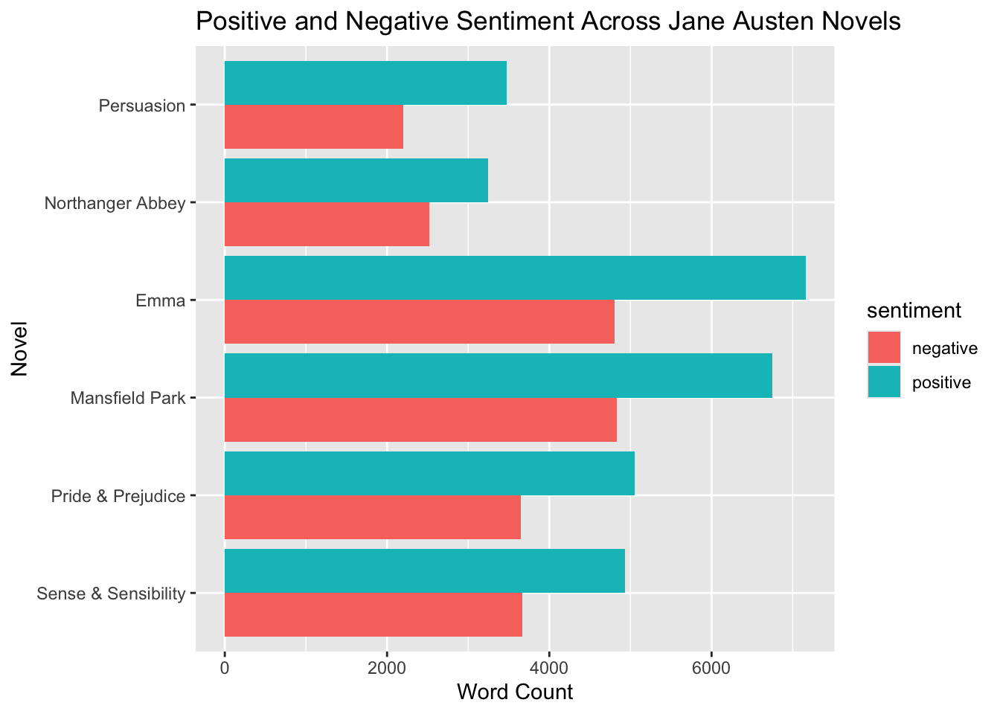
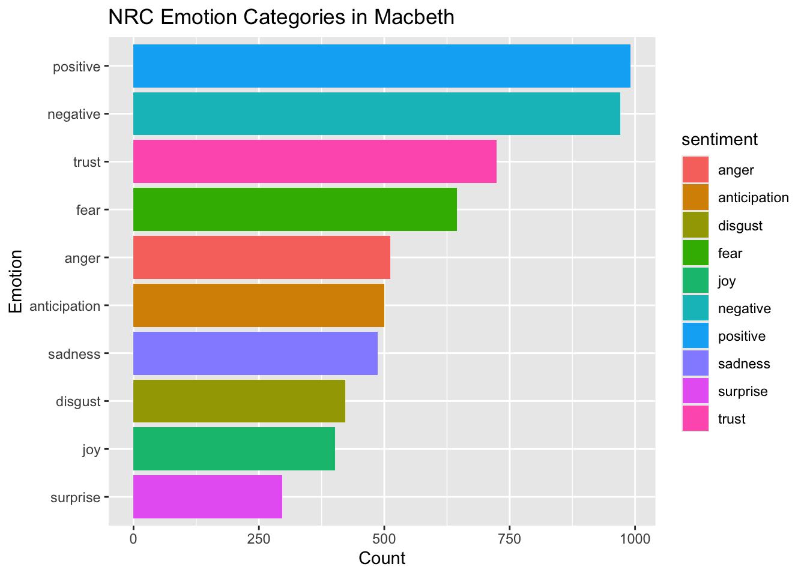

Sentiment Analysis Using Text Mining in R: Jane Austen and Macbeth
Author
Lionel Desroses
Published
November 8, 2026
Instroduction
Sentiment analysis is a text mining technique used to identify and measure the emotional tone expressed within a body of text. By comparing words in a document against a predefined sentiment lexicon, researchers can quantify positive, negative, and emotional content. This approach is widely used in fields such as social media analysis, customer feedback evaluation, political science, and literary analysis.
In Chapter 2 of Text Mining with R, Silge and Robinson demonstrate how sentiment analysis can be performed using the tidytext framework and several sentiment lexicons. Their example analyzes the text of Jane Austen novels and explores how sentiment changes throughout the books.
This project reproduces the sentiment analysis example from Chapter 2 and then extends the analysis in two ways. First, a different text corpus, Shakespeare’s Macbeth, will be analyzed using the same methodology. Second, an additional sentiment lexicon will be incorporated to provide a more detailed examination of emotional content. The results from these analyses will be compared to determine how different texts and lexicons influence sentiment measurements.
# A tibble: 6 × 2
text book
<chr> <fct>
1 "SENSE AND SENSIBILITY" Sense & Sensibility
2 "" Sense & Sensibility
3 "by Jane Austen" Sense & Sensibility
4 "" Sense & Sensibility
5 "(1811)" Sense & Sensibility
6 "" Sense & Sensibility
# A tibble: 6 × 2
book word
<fct> <chr>
1 Sense & Sensibility sense
2 Sense & Sensibility and
3 Sense & Sensibility sensibility
4 Sense & Sensibility by
5 Sense & Sensibility jane
6 Sense & Sensibility austen
# A tibble: 2 × 2
sentiment n
<chr> <int>
1 negative 21679
2 positive 30608
discusion
The Bing lexicon identified 30,608 positive words and 21,679 negative words across the Jane Austen corpus. Overall, the novels exhibited a more positive than negative sentiment profile, suggesting that positive language appears more frequently throughout Austen’s works.
austen_sentiment %>%count(book, sentiment) %>%ggplot(aes(book, n, fill = sentiment)) +geom_col(position ="dodge") +coord_flip() +labs(title ="Positive and Negative Sentiment Across Jane Austen Novels",x ="Novel",y ="Word Count")

discusion
The distribution of positive and negative words varies across the novels, but positive sentiment consistently exceeds negative sentiment. This pattern reflects the generally optimistic tone common within Austen’s writing.
Extension 1: Macbeth
macbeth <-gutenberg_download(1533)
Using mirror https://gutenberg.pglaf.org.
head(macbeth)
# A tibble: 6 × 2
gutenberg_id text
<int> <chr>
1 1533 "MACBETH"
2 1533 ""
3 1533 "by William Shakespeare"
4 1533 ""
5 1533 ""
6 1533 ""
# A tibble: 6 × 2
gutenberg_id word
<int> <chr>
1 1533 macbeth
2 1533 by
3 1533 william
4 1533 shakespeare
5 1533 contents
6 1533 act
macbeth_bing <- macbeth_words %>%inner_join(bing, by ="word")macbeth_counts <- macbeth_bing %>%count(sentiment)macbeth_counts
# A tibble: 2 × 2
sentiment n
<chr> <int>
1 negative 918
2 positive 680
discusion
Using the Bing lexicon, *Macbeth* contained 918 negative words and 680 positive words. Unlike the Jane Austen corpus, negative sentiment exceeded positive sentiment. This result aligns with the play’s dark themes and frequent references to violence, conflict, and death.
macbeth_bing %>%count(sentiment) %>%ggplot(aes(sentiment, n, fill = sentiment)) +geom_col() +labs(title ="Bing Sentiment Analysis of Macbeth",x ="Sentiment",y ="Word Count" ) +theme_minimal()
# A tibble: 10 × 2
sentiment n
<chr> <int>
1 positive 991
2 negative 970
3 trust 724
4 fear 645
5 anger 512
6 anticipation 500
7 sadness 487
8 disgust 422
9 joy 402
10 surprise 297
Discusion
The NRC lexicon provided a more detailed emotional profile of *Macbeth*. While positive and negative emotions were nearly balanced, the play exhibited high levels of trust, fear, anger, anticipation, and sadness. These findings reflect the complex relationships, political intrigue, and psychological conflict that drive the narrative.
emotion_counts %>%ggplot(aes(reorder(sentiment, n), n, fill = sentiment)) +geom_col() +coord_flip() +labs(title ="NRC Emotion Categories in Macbeth",x ="Emotion",y ="Count" )

Comparison of Results
The sentiment analysis revealed clear differences between the Jane Austen corpus and Shakespeare’s *Macbeth*. Using the Bing lexicon, the Jane Austen novels contained 30,608 positive words and 21,679 negative words, indicating an overall positive sentiment profile. In contrast, *Macbeth* contained 918 negative words and 680 positive words, suggesting a significantly darker tone.
The NRC lexicon provided additional insight by identifying dominant emotional categories within *Macbeth*. Fear, anger, sadness, and disgust occurred frequently, reflecting the themes of betrayal, violence, ambition, and guilt that are central to the tragedy.
These results demonstrate that sentiment analysis is highly dependent on both the text being analyzed and the sentiment lexicon used. While Bing provides a simple positive-versus-negative classification, NRC offers a richer emotional interpretation of the text.
This project successfully reproduced the sentiment analysis example presented in Chapter 2 of *Text Mining with R* using the Jane Austen corpus and the Bing sentiment lexicon. The analysis was then extended by examining Shakespeare’s *Macbeth* and applying the NRC sentiment lexicon.
The results showed that the Jane Austen novels contained considerably more positive than negative sentiment words, while Macbeth exhibited the opposite pattern. This finding reflects the differing themes and narrative styles of the two authors. Austen’s works generally emphasize relationships and personal development, whereas Macbeth focuses on ambition, betrayal, violence, and tragedy.
The NRC analysis further demonstrated that fear, anger, sadness, and disgust are important emotional components of Macbeth. Overall, the project illustrates how sentiment analysis can be used to explore emotional patterns in literature and how different sentiment lexicons can provide different perspectives on the same text.
# References
Silge, J., & Robinson, D. (2024). *Text Mining with R: A Tidy Approach* (2nd ed.). O’Reilly Media. https://www.tidytextmining.com/
Shakespeare, W. *Macbeth*. Project Gutenberg. https://www.gutenberg.org/